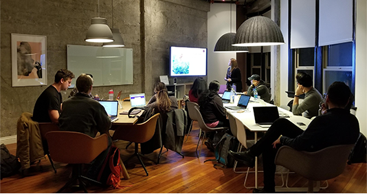

台灣基督長老教會是普世基督教會及改革宗教會大家庭的一份子。它的歷史根源可以上溯至1865年英國長老教會宣教師馬雅
各醫生來台在南部及1872年加拿大長老教會宣教師馬偕牧師在北部所開展的宣教工作。1912年宣教師成立台灣大會，讓屬不
同母會的南北大會可以共同討論事工。1951年召開會議議決成立今之台灣基督長老教會總會。
在無數宣教師的熱心事奉及本地傳道人與信徒的積極參與下，長老教會通過醫療、傳道、教育、社會服務等方式，一步步在
全台灣各地立下教會的根基，並藉著小會、中會/族群區會、總會的設立，逐漸走向組織化、自主化的階段。
我教會經歷過滿清、日本、國民黨政權等不同外來政權的統治，仍以「焚而不燬」的精神見證著基督的主權。我們曾經面對
過滿清時期的宣教困境及迫害，日治時代的皇民化運動和政教糾葛，以及國民黨政權時期的二二八事件、白色恐怖、美麗島
事件等政治慘案。
1970年以來，面對台灣在內政外交上的危機和困境，以及台灣前途的問題，我們提出「中央民意代表全面改選」、「台灣
前途應由台灣全體住民決定」、「促請政府使台灣成為一新而獨立的國家」、「台灣主權獨立」、「台灣有權加入聯合國」
等歷史性的信仰宣言。在面對中國以2000多顆飛彈威脅台灣時，我教會仍堅定台灣主權不屬中國的立場，持續關心台灣前
途。同時也透過積極關心生態環境保護、反核、女性意識、性別公義、人權等社會議題及關懷原住民、漁民、勞工、身心
障礙等被社會忽視的群體來實踐上帝的愛與公義。正如台灣基督長老教會的信仰告白所宣示與確信：「教會是上帝百姓的
團契，受召來宣揚耶穌基督的拯救，做和解的使者，是普世的，復釘根在本地，認同所有的住民，通過愛和受苦，來成做
盼望的記號。」
/ 我想聚會 /

/ 新朋友留言 /